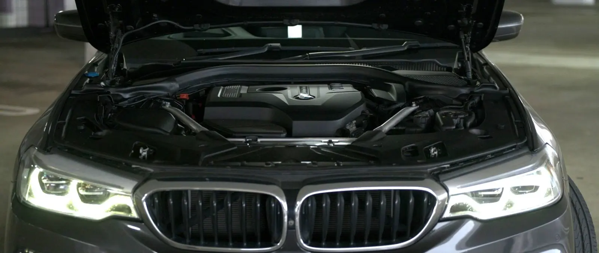
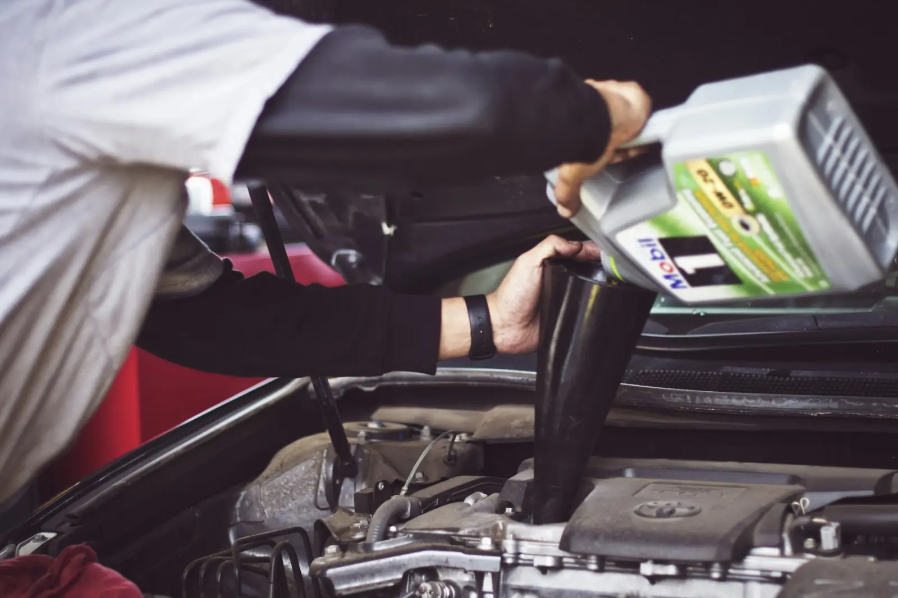
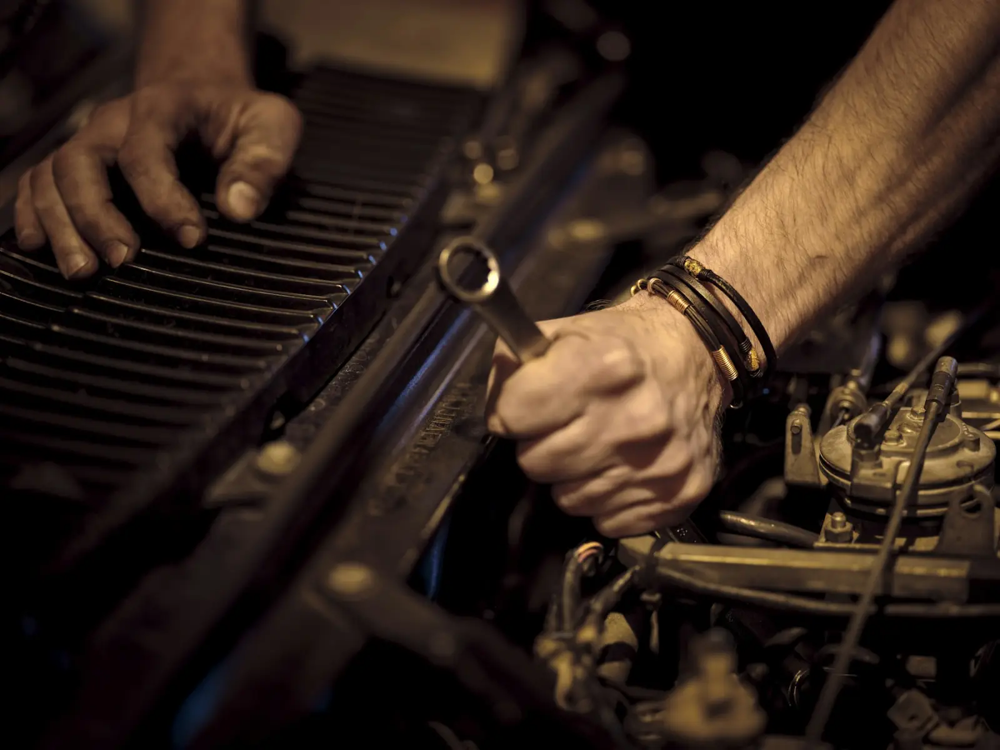
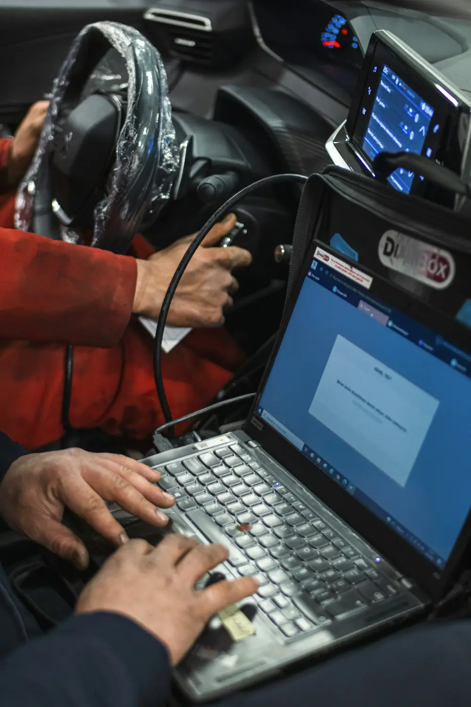
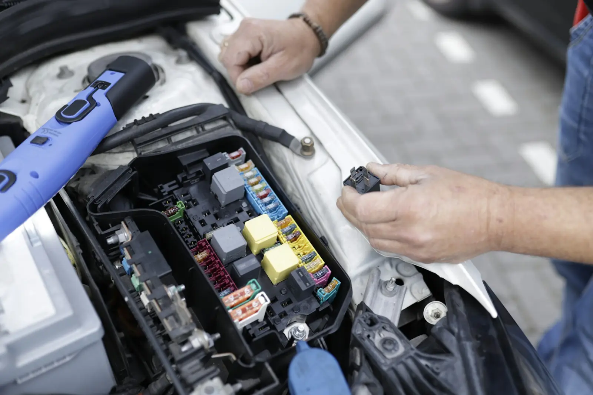
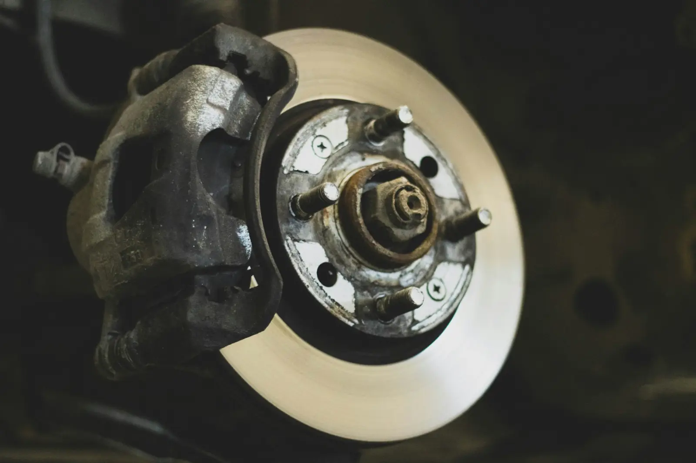
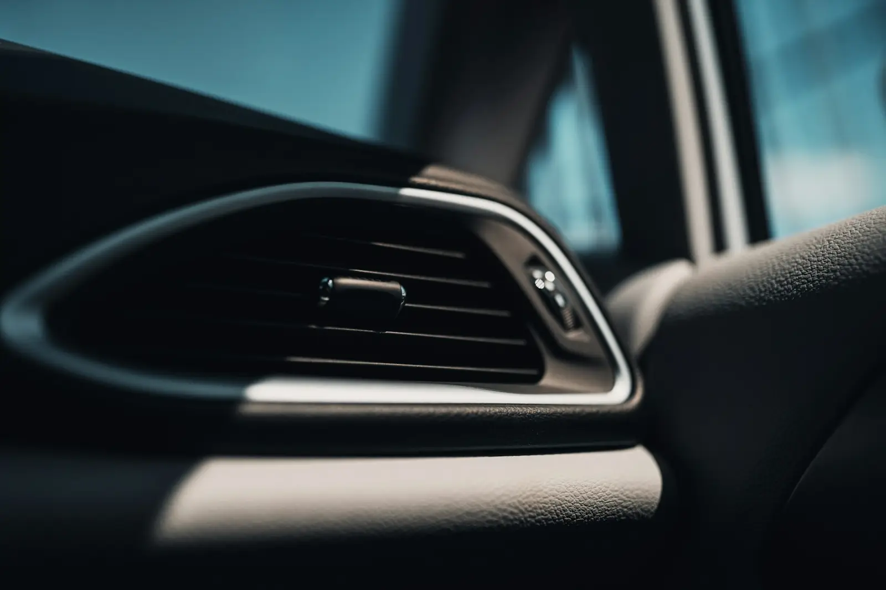
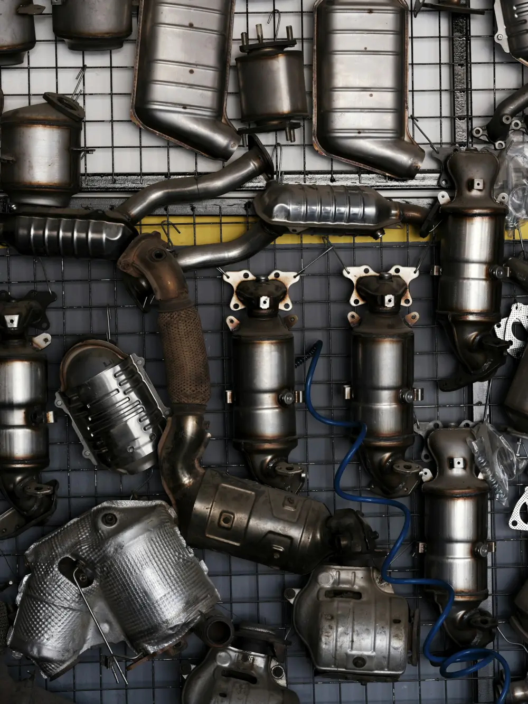
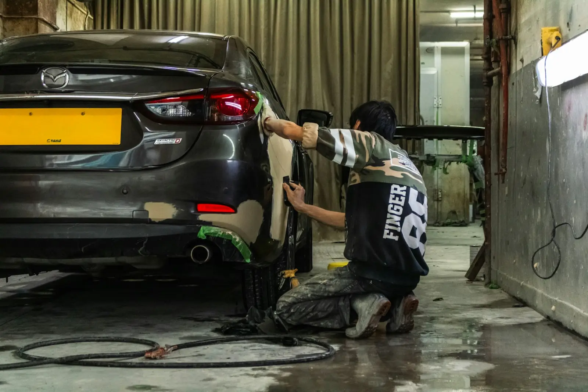

Autohuolto Suutarilassa. Vantaan ja Helsingin rajalla.
Huollot, korjaukset ja vianhaku autosi merkistä riippumatta. Kuuntelemme, selitämme työn ja sovimme kustannusarvion kanssasi ennen kuin aloitamme.

- 4,7 / 5Asiakasarviot AutoJerryssä
- Kaikki automerkitRiippumaton monimerkkikorjaamo
- Osa AD-ketjuaPaikallinen palvelu, ketjun osaaminen
- Hinta sovitaan ensinLisätyöt vain luvallasi
Mitä autosi tarvitsee?
Määräaikaishuolloista moottoriremontteihin ja korin korjaukseen. Lähetä ajanvarauspyyntö mistä tahansa palvelusta, niin vahvistamme ajan kanssasi.

01Määräaikaishuolto
Valmistajan huolto-ohjelman mukaiset työt ja merkintä digitaaliseen huoltokirjaan.
Lue lisää
02Moottorikorjaukset ja ‑remontit
Yksittäisistä moottorikorjauksista kokonaisiin remontteihin, myös jakohihnat ja jakoketjut.
Lue lisää
03Vianhaku
Vikakoodien luku, mittaukset ja järjestelmällinen vianhaku korjauspäätöksen tueksi.
Lue lisää
04Sähkötyöt
Sähkövikojen paikannus, mittaukset sekä johtojen, liittimien ja komponenttien korjaukset.
Lue lisää
05Jarrut ja alusta
Jarrujen, iskunvaimentimien, jousien ja alustan osien tarkastus sekä korjaus.
Lue lisää
06Ilmastointihuolto
R134a- ja R1234yf-järjestelmien huollot, toiminnan tarkastus ja vuodonetsintä.
Lue lisää
07Pakokaasujärjestelmät
DPF-, EGR- ja AdBlue-järjestelmien vikojen selvitys ja korjaukset.
Lue lisää
08Kori, ruoste ja maalaus
Korikorjaukset, ruostekorjaukset, hitsaustyöt ja automaalaus.
Lue lisääMitä asiakkaamme sanovat.
4,7/ 5
Asiakasarviot AutoJerryssä
Lue kaikki arviot ↗Määräaikaishuolto valmistajan huolto-ohjelman mukaan. Ei yllätyksiä, ei "lisämyyntiä", nopea palvelu. Ennenkin olen saanut täältä hyvää palvelua.
Tehtiin mitä sovittiin ja sovitulla hinnalla.
Ihan asiallinen korjaamo, auto tuli kuntoon päivässä, kuten luvattiin. Vähän tuli yllätyksiä ja pieni lisäkustannus alkuperäiseen, mutta siitä ilmoitettiin myös ennakkoon.
Asiointi hyvää ja asiallista. Sain erittäin hyvää palvelua ja voin lämpimästi suositella tätä korjaamoa muille
Hyvin hoidettu, asianmukainen palvelu, homma eteni niin kuin oli sovittu positiivisella asenteella.
Siellä oli ihan hyvä tunnelma ja hommat hoituivat todella hyvin.
Arviot ovat sanatarkkoja lainauksia AutoJerry-palvelusta.
Löydät meidät Suutarilasta.
Korjaamomme on Suutarilassa lähellä Kehä III:a.
- KäyntiosoiteLyhtykuja 6
00750 Helsinki - AukioloajatMa–pe 8–17
La sopimuksen mukaan - Puhelin050 557 2709
- Sähköpostiinfo@
suutarilanautohuolto.fi
Kerro, miten voimme auttaa.
Käymme työn ja kustannusarvion läpi ennen kuin aloitamme. Etkö ole varma, mitä autosi tarvitsee? Kerro tilanteesta omin sanoin.
- 01Auton rekisterinumero
- 02Ajokilometrit
- 03Tarvittava työ tai vian kuvaus
- 04Toivottu ajankohta
Haluatko mieluummin soittaa?
Soita 050 557 2709Kiitos, pyyntö on vastaanotettu.
Käymme sen läpi ja otamme yhteyttä ajan vahvistamiseksi. Kiireellisissä asioissa soita arkisin 8–17 numeroon 050 557 2709.
Tämä on demoversio, joten tietoja ei lähetetty. Oikealla sivulla pyyntö menisi suoraan korjaamon sähköpostiin.